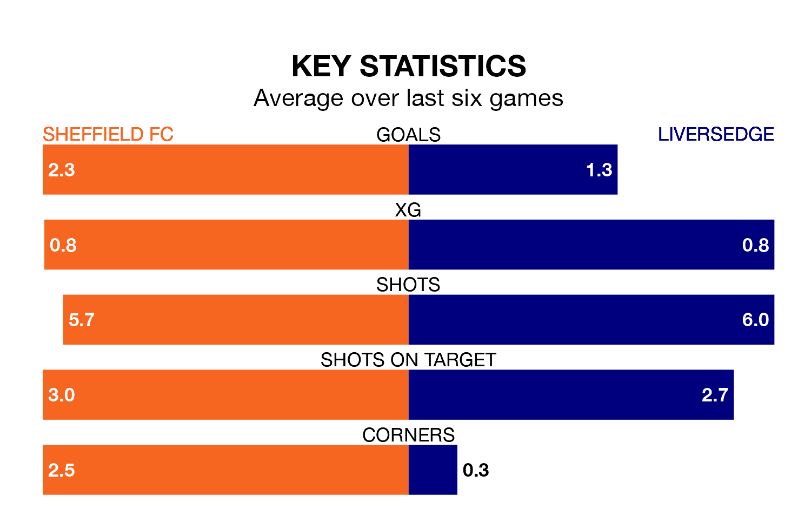

Liversedge travel to Sheffield FC on Saturday in the Northern Premier League Division One East.
The visitors come into the game on the back of a win in their last match, having beaten Carlton Town 3-1 away.
Sheffield FC also won their last match, 3-1 against Ashington AFC.
Sheffield FC are 16th in the table after 21 games, of which they have won seven and drawn three, earning 24 points.
Liversedge are six places ahead of the hosts in 10th, with nine wins and three draws putting them on 30 points.
With 35 goals in 21 games so far this season, Sheffield FC are scoring more than average in the league with 1.7 goals per game. But they are conceding more than average too, letting in 38 goals at a rate of 1.8 per game.
The away team, meanwhile, are below average scorers, with 1.5 goals per game, compared to a league average of 1.6. They have conceded 1.3 goals per game.
Sheffield FC are in mixed form in the Northern Premier League Division One East, with three wins and a draw from their last six games.
With two wins and a draw over that period, Liversedge's form is worse – they have taken seven points from 18, compared to the home side's 10.
In the last three years, Sheffield FC and Liversedge have played each other on three occasions. Liversedge won all of them.
Their last meeting was on September 16, when Liversedge won 3-2 at home.
Updated: 14:12 (UTC), 02/02/24